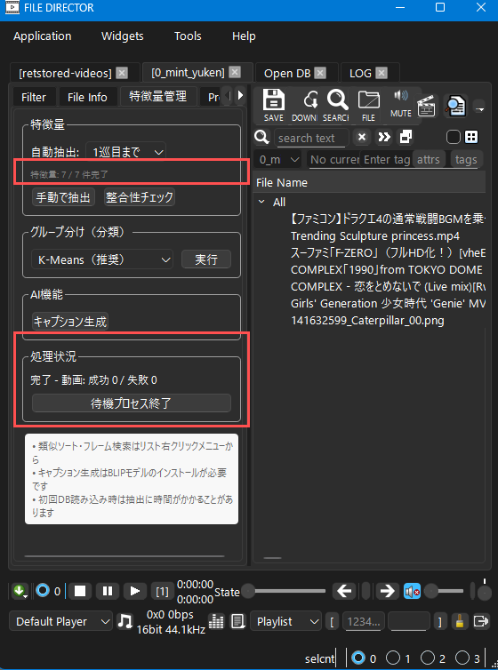
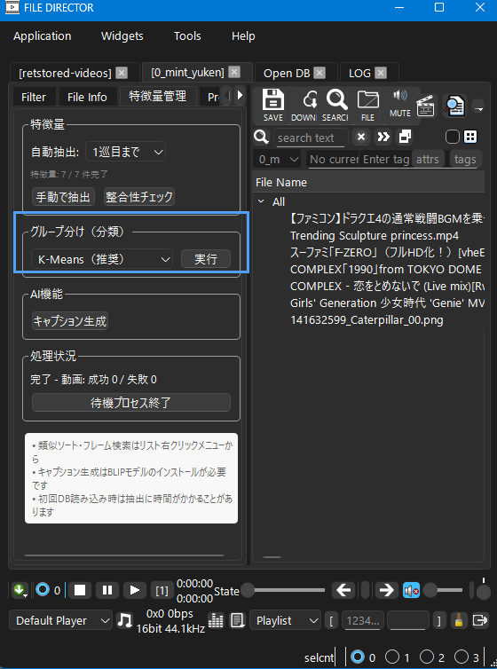

FileDirectorで何ができるか、7つのステップで体験します。
FileDirector.exe をダブルクリックするとアプリが起動します。
起動すると、空のデータベース（DB）が自動的に開きます。ここにファイルを追加していきます。
YouTubeなどから動画をダウンロードして、すぐ再生できます。
上部ツールバーの DOWNLOAD ボタンをクリックします。


ダウンロードダイアログが開きます。


フォーマット一覧が表示されたら、Quality を選択（デフォルトの best mp4 でそのまま OK）して DOWNLOAD をクリックします。
ダウンロードが完了すると、ファイルリストにファイルが追加されます。

ファイルをダブルクリックすると再生が始まります。
気に入ったファイルには thumbup タグをつけておくと、後で絞り込めます。

再生ウィンドウ右の DB Control パネルで 👍 のチェックボックスをクリックすると thumbup タグが付きます。
ヒント: タグはいくつでも自由につけられます。thumbup は「気に入った」目印として使える組み込みタグです。
Windows のエクスプローラーで動画ファイルをダブルクリックすると、FileDirector で直接開けるように設定できます。

video-exts は設定済みの拡張子グループ）設定後はエクスプローラーで動画ファイルをダブルクリックするだけで FileDirector が起動し、ファイルが自動的に DB に追加されます。

手持ちの動画フォルダをそのまま DB に登録できます。ファイルリスト領域にフォルダをドラッグ＆ドロップすると確認ダイアログが表示されます。

追加するファイル数が表示されるので、問題なければ Yes をクリックします。
安心: 元のファイルは移動・変更されません。ファイルの場所だけを記録します。
FileDirector は AI を使って、ファイルの「特徴量」を自動で抽出します。
DB を開くと、バックグラウンドで自動的に特徴量の抽出が始まります。 初回は全ファイルを処理するため時間がかかりますが、操作を続けながら待てます。
補足: 初回は Python ライブラリのセットアップが自動で行われます（数分かかります）。
進捗は 特徴量管理 タブで確認できます。「特徴量: N/N件完了」がファイル総数と一致し、処理状況に「完了」と表示されれば抽出完了です。

抽出が完了すると、リストの右クリックメニューから 類似ソート が使えるようになります。また SEARCH ボタンからフレーム単位の類似検索もできます。
特徴量を使って、似たファイルどうしを自動でグループ分けできます。

グループ分け（分類） セクションで K-Means（推奨） を選んで 実行 をクリックします。処理完了後にクラスタ数と件数の一覧が表示されるので、Yes をクリックするとタグが付与されます。
タグは kmeans_000、kmeans_001 … のように自動命名され、フィルターパネルの kmeans グループにまとめられます。
フィルターパネルの kmeans グループを右クリックし、タグブラウザ: kmeans を選ぶと、クラスタごとにサムネイルをまとめて確認できます。
ツールバーの SEARCH ボタンからフレーム検索ダイアログを開けます。

フレーム検索 タブで + Add Current Frame をクリックすると、現在プレイヤーで再生中のフレームが参照フレームとして追加されます。参照フレームを追加したら Search をクリックすると、類似度の高い順にファイルが表示されます。検索中は左側の 処理状況 パートに進捗が表示されます。キーワード検索 タブに切り替えるとテキストで検索することもできます。
| やりたいこと | 参照先 |
|---|---|
| 動画を切り抜き・変換したい | FFmpegガイド |
| タグで細かく整理・絞り込みたい | ユーザーガイド |
| スマホからアクセスしたい | ユーザーガイド |
| gallery-dl で画像サイトからダウンロードしたい | ユーザーガイド |